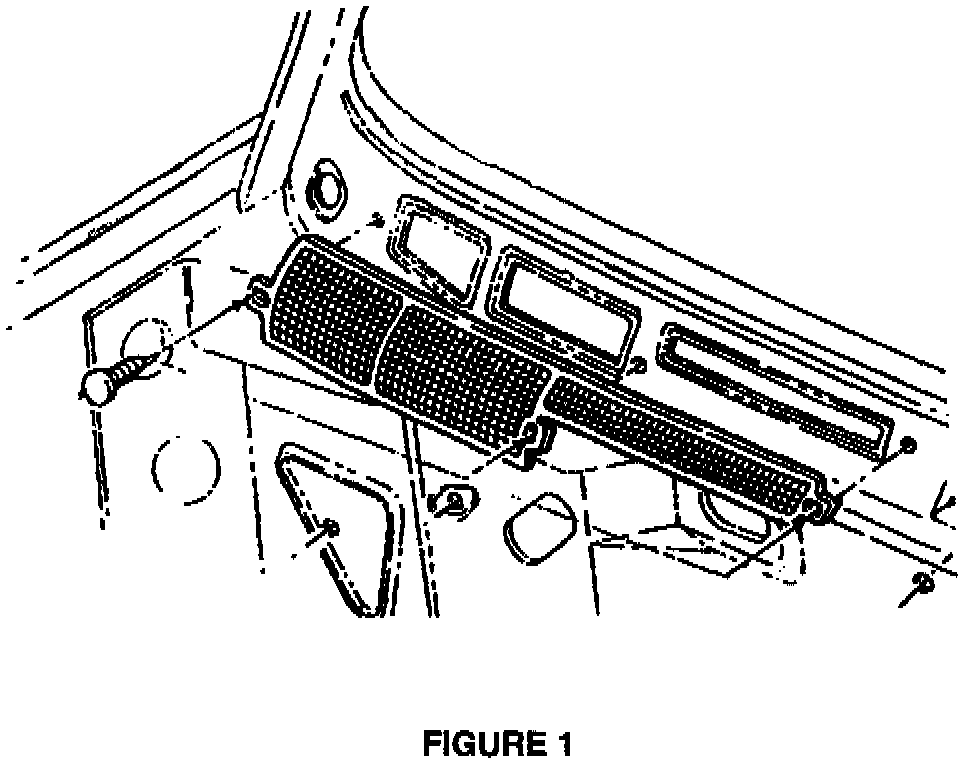

Evaporator/Cowl Screen - Revision
NO: 24-17-97GROUP: Heating & A/C
DATE: Dec. 31, 1997
SUBJECT:
Evaporator service/Cowl Screen
MODELS:
1993 - 1997 (ZJ) Grand Cherokee/Grand Wagoneer
1993 - 1997 (ZG) Grand Cherokee (International Markets)
DISCUSSION:
A revised cowl plenum screen has been released which contains a fine mesh screen to minimize debris from entering the heater A/C housing. A build up of organic debris can decay and form acids which over time may contribute to evaporator corrosion/odor. When an evaporator is replace for leaks, the new screen should be installed as a precaution. Inspect the plenum area for any open holes or missing plugs which would allow leaves or other debris to enter the heater A/C housing. All of these areas should be sealed.
PARTS REQUIRED:
1 55036542 Screen, cowl plenum
REPAIR PROCEDURE:
This bulletin involves installing a revised cowl plenum screen.
1. Remove the windshield wiper arms.
2. Remove the cowl grille.
3. Remove the cowl screen.

4. Install the new screen, p/n 55036542. (See Figure 1)
5. Install the cowl grille.
6. Install the wiper arms.
POLICY:
Reimbursable within the provisions of the warranty.
TIME ALLOWANCE:
Labor Operation No: 23-02-08-97 0.3 Hrs.
FAILURE CODE: P8 - New Part